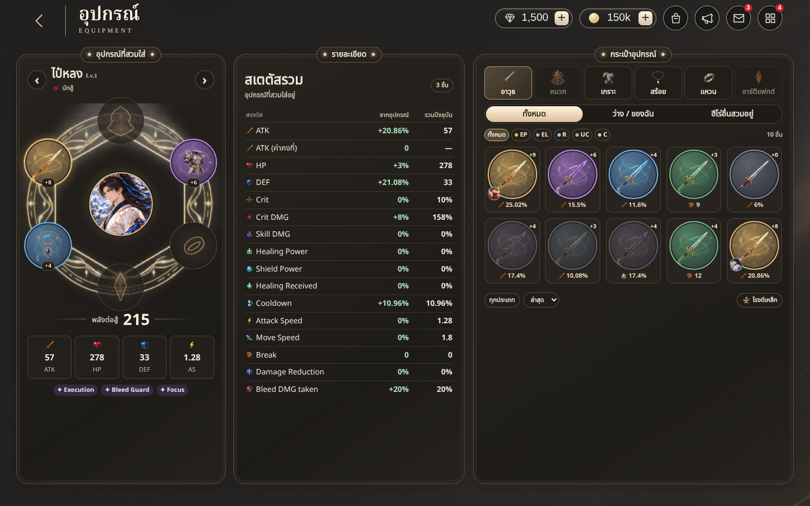
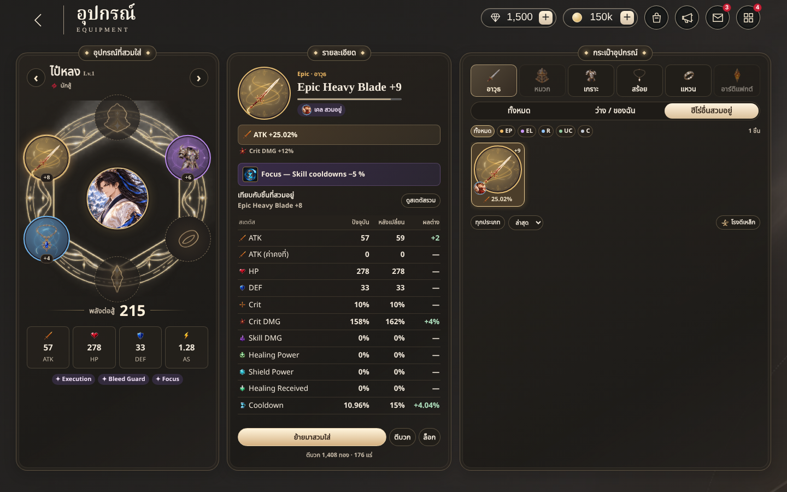
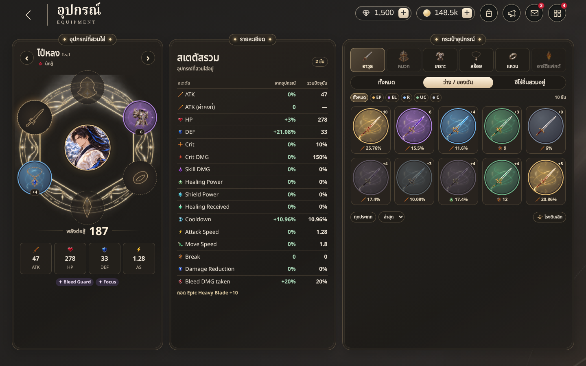

เทียบตัวอย่างที่เลือกกับหน้าอุปกรณ์ Desktop จากเกมจริงที่ 1440 × 900



ภาพเกมใช้เซฟทดสอบของไป๋หลงและเคล ทรัพยากร สเตตัส และชื่ออุปกรณ์ในภาพอ่านจากเกม วงแหวนแสดงหกตำแหน่งตามแบบ หมวกกับอาร์ติแฟกต์เป็นตำแหน่งสำหรับอนาคต สร้อยกับแหวนใช้ช่องเครื่องประดับร่วมกัน